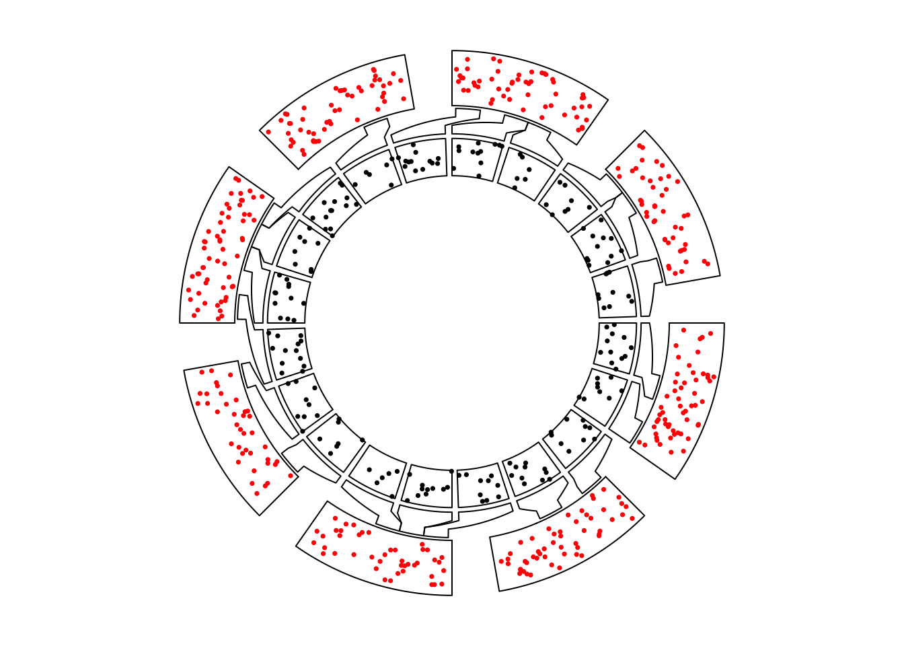
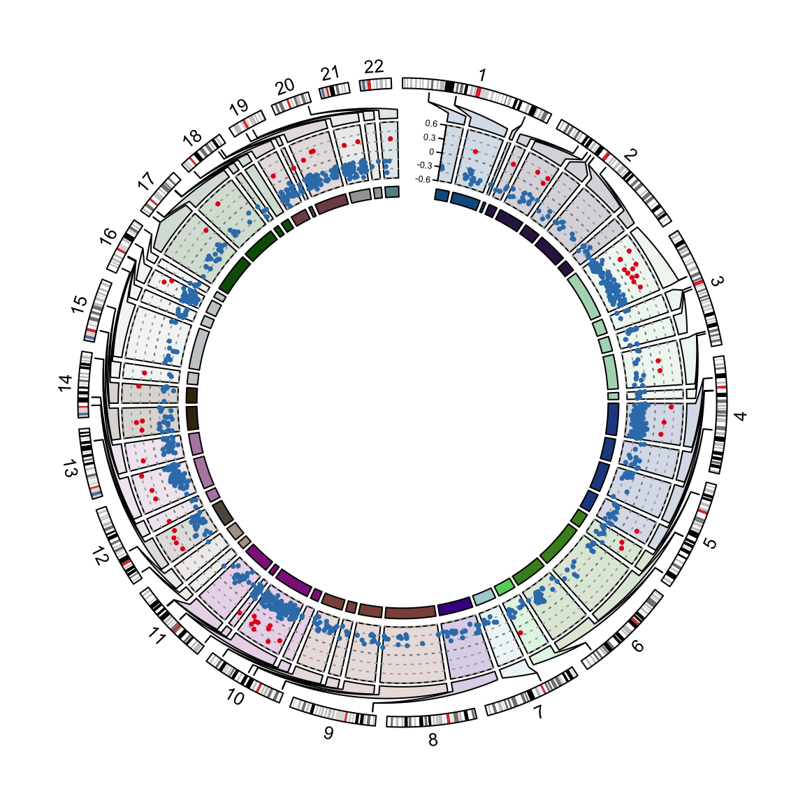

Nested zooming
Basic idea
set.seed(123)
df = data.frame(cate = sample(letters[1:8], 400, replace = TRUE),
x = runif(400),
y = runif(400),
stringsAsFactors = FALSE)
df = df[order(df[[1]], df[[2]]), ]
rownames(df) = NULL
df$interval_x = as.character(cut(df$x, c(0, 0.2, 0.4, 0.6, 0.8, 1.0)))
df$name = paste(df$cate, df$interval_x, sep = ":")
df$start = as.numeric(gsub("^\\((\\d(\\.\\d)?).*(\\d(\\.\\d)?)]", "\\1", df$interval_x))
df$end = as.numeric(gsub("^\\((\\d(\\.\\d)?),(\\d(\\.\\d)?)]$", "\\3", df$interval_x))
nm = sample(unique(df$name), 20)
df2 = df[df$name %in% nm, ]
correspondance = unique(df2[, c("cate", "start", "end", "name", "start", "end")])
zoom_sector = unique(df2[, c("name", "start", "end", "cate")])
zoom_data = df2[, c("name", "x", "y")]
data = df[, 1:3]
sector = data.frame(cate = letters[1:8], start = 0, end = 1, stringsAsFactors = FALSE)
sector_col = structure(rand_color(8, transparency = 0.5), names = letters[1:8])
circos.clear()
f1 = function() {
par1 = ccPar(gap.degree = 10)
cc = ccPlot(sectors = sector[, 1], xlim = sector[, 2:3], clear = FALSE)
t1 = ccTrack(data[[1]], x = data[[2]], y = data[[3]], ylim = c(0, 1),
panel.fun = function(x, y) {
circos.points(x, y, pch = 16, cex = 0.5, col = "red")
})
show(cc + par1 + t1)
}
f2 = function() {
par1 = ccPar(gap.degree = 2, cell.padding = c(0, 0, 0, 0))
cc = ccPlot(sectors = zoom_sector[[1]], xlim = as.matrix(zoom_sector[, 2:3]), clear = FALSE)
t1 = ccTrack(zoom_data[[1]], x = zoom_data[[2]], y = zoom_data[[3]],
panel.fun = function(x, y) {
circos.points(x, y, pch = 16, cex = 0.5)
})
show(cc + par1 + t1)
}
circos.nested(f1, f2, correspondance)

Nested zooming between two circular plots.
circos.nested(f2, f1, correspondance[, c(4:6, 1:3)])

Nested zooming between two circular plots, zoomed plot is put outside.
sector_col = structure(rand_color(8, transparency = 0.5), names = letters[1:8])
circos.clear()
f1 = function() {
par1 = ccPar(gap.degree = 10)
cc = ccPlot(sectors = sector[, 1], xlim = sector[, 2:3], clear = FALSE)
t1 = ccTrack(data[[1]], x = data[[2]], y = data[[3]], ylim = c(0, 1),
panel.fun = function(x, y) {
l = correspondance[[1]] == CELL_META$sector.index
if(sum(l)) {
for(i in which(l)) {
circos.rect(correspondance[i, 2], CELL_META$cell.ylim[1],
correspondance[i, 3], CELL_META$cell.ylim[2],
col = sector_col[CELL_META$sector.index],
border = sector_col[CELL_META$sector.index])
}
}
circos.points(x, y, pch = 16, cex = 0.5)
circos.text(CELL_META$xcenter, CELL_META$ylim[2] + mm_y(2),
CELL_META$sector.index, niceFacing = TRUE, adj = c(0.5, 0))
})
show(cc + par1 + t1)
}
f2 = function() {
par1 = ccPar(gap.degree = 2, cell.padding = c(0, 0, 0, 0))
cc = ccPlot(sectors = zoom_sector[[1]], xlim = as.matrix(zoom_sector[, 2:3]), clear = FALSE)
t1 = ccTrack(zoom_data[[1]], x = zoom_data[[2]], y = zoom_data[[3]],
panel.fun = function(x, y) {
circos.points(x, y, pch = 16, cex = 0.5)
}, bg.col = sector_col[zoom_sector$cate],
track.margin = c(0, 0))
show(cc + par1 + t1)
}
circos.nested(f1, f2, correspondance, connection_col = sector_col[correspondance[[1]]])

Nested zooming between two circular plots, slightly complex plots.
Visualization of DMRs from tagmentation-based WGBS
load(system.file(package = "circlize", "extdata", "tagments_WGBS_DMR.RData"))
circos.clear()
chr_bg_color = rand_color(22, transparency = 0.8)
names(chr_bg_color) = paste0("chr", 1:22)
f1 = function() {
par1 = ccPar(gap.after = 2, start.degree = 90)
cc = ccPlot(initMode = "initializeWithIdeogram", chromosome.index = paste0("chr", 1:22),
plotType = c("ideogram", "labels"), ideogram.height = 0.03, clear = FALSE)
show(cc + par1)
}
f2 = function() {
par1 = ccPar(cell.padding = c(0, 0, 0, 0), gap.after = c(rep(1, nrow(tagments)-1), 10))
cc = ccPlot(initMode = "genomicInitialize",data = tagments, plotType = NULL, clear = FALSE)
t1 = ccGenomicTrack(DMR1, ylim = c(-0.6, 0.6),
panel.fun = function(region, value, ...) {
for(h in seq(-0.6, 0.6, by = 0.2)) {
circos.lines(CELL_META$cell.xlim, c(h, h), lty = 3, col = "#AAAAAA")
}
circos.lines(CELL_META$cell.xlim, c(0, 0), lty = 3, col = "#888888")
circos.genomicPoints(region, value,
col = ifelse(value[[1]] > 0, "#E41A1C", "#377EB8"),
pch = 16, cex = 0.5)
}, bg.col = chr_bg_color[tagments$chr], track.margin = c(0.02, 0))
c1 = ccCell(sector.index = "chr1-44876009-45016546")
y1 = ccYaxis(side = "left", at = seq(-0.6, 0.6, by = 0.3), labels.cex = 0.4)
t2 = ccTrack(ylim = c(0, 1), track.height = mm_h(2),
bg.col = add_transparency(chr_bg_color[tagments$chr], 0))
c1 = c1 + y1
t1 = t1 + c1
show(cc + par1 + t1 + t2)
}
circos.nested(f1, f2, correspondance, connection_col = chr_bg_color[correspondance[[1]]])

Visualization of DMRs.